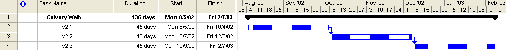

The following is a basic overview of the timeline and milestones for recent and upcoming Calvary Web releases (v2.1+).

Goal: Basic content update for pages that remained as-is during the v1.0->2.0 upgrade. Begin steps to ready pages for better outreach and overall functionality to visitors and the church body.
TBD
TBD